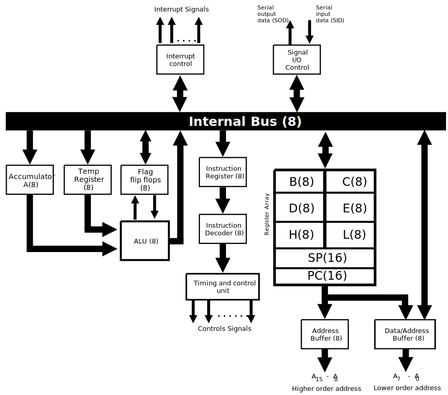
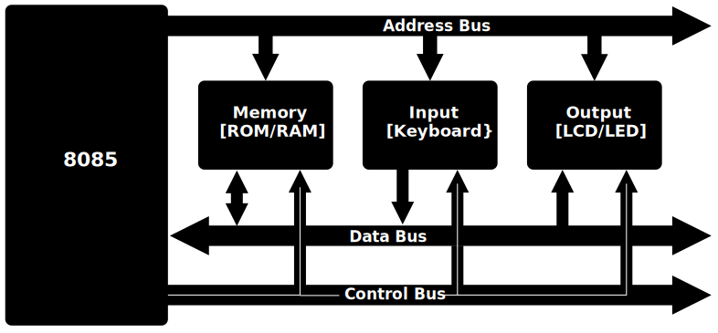

Introduction to Microprocessor
- A microprocessor is a central processing unit (CPU) integrated onto a single chip.
- It serves as the brain of a computer system, executing instructions and performing calculations to enable the functioning of various applications.
- Microprocessors are fundamental components in modern electronic devices, powering not only computers but also a wide range of embedded systems, from household appliances to automotive control systems.
- Key features and characteristics of microprocessors include their clock speed, architecture, instruction set, and the ability to process data and execute instructions stored in memory.
- They play a crucial role in the overall performance and capabilities of a computing system.
- As technology has advanced, microprocessors have become increasingly powerful, smaller in size, and more energy-efficient.
- This continuous evolution has led to improvements in computing speed, efficiency, and the ability to handle complex tasks.
Don't get confused between microprocessor, microcontroller, microcomputer, and mainframe
- A microprocessor has memory on a separate chip, making it distinct from a microcontroller.
- Microprocessors are advantageous as they allow for flexibility in memory configuration and expansion.
- In contrast, a microcontroller integrates all components, including memory, onto a single chip, providing a compact and integrated solution suitable for specific applications.
- Microcomputers, encompassing a broader category, refer to complete computer systems that are smaller in scale compared to mainframes.
- Mainframes, in contrast, are powerful computers designed for large-scale data processing and handling critical business applications.
Basic Block Diagram of Microprocessor

The above diagram contains:
- Input device: This component facilitates the entry of data into the microprocessor, allowing it to process information from external sources.
- Output device: Responsible for presenting the processed data or results in a usable form to the user or other parts of the system.
- ALU (Arithmetic Logic Unit): The ALU performs mathematical and logical operations, crucial for executing instructions and processing data within the microprocessor.
- Register Array: A set of registers that store and quickly provide access to temporary data during the execution of instructions.
- Control Unit: This unit manages and coordinates the operations of various components within the microprocessor, ensuring proper execution of instructions.
- Memory: Stores both data and instructions for the microprocessor to access and utilize during its operation.
Basic Steps Followed by Microprocessor
Before executing any instruction, the microprocessor needs to know where to find the data or operation to be performed. This step involves determining the memory location or register address of the instruction to be processed.
- Fetch:
- Decode:
- Execute:
Once the address is determined, the microprocessor fetches the instruction from the specified memory location. This involves retrieving the binary code representing the instruction and bringing it into the processor's memory for further processing.
After fetching the instruction, the microprocessor decodes the binary code. This step involves interpreting the instruction to understand what operation needs to be performed and which data is involved. The microprocessor determines the specific sequence of actions required for execution.
With the instruction decoded, the microprocessor performs the actual operation or manipulates the data according to the instruction's requirements. This step completes the execution cycle, and the result may be stored back in memory or sent to other components for further processing.
Broadly, There Are Two Types of Microprocessors
- General Purpose Microprocessor:
- Special Purpose Microprocessor:
- Bitcoin mining involves solving complex mathematical problems to validate and secure transactions on the Bitcoin network. Specialized microprocessors called Application-Specific Integrated Circuits (ASICs) are often used for bitcoin mining due to their efficiency in performing the required hashing operations. These ASICs are designed specifically for mining cryptocurrencies and are highly optimized for this task, making them more power-efficient and cost-effective compared to using general-purpose processors.
General-purpose microprocessors are versatile and designed to handle a wide range of tasks. They are commonly found in personal computers, laptops, and servers. These processors are capable of executing various instructions and performing tasks such as data processing, arithmetic calculations, and running a variety of applications. General-purpose microprocessors provide flexibility for diverse computing needs.
Special-purpose microprocessors are designed for specific applications or dedicated tasks. Unlike general-purpose processors, they are optimized to excel in particular functions. Examples include microprocessors embedded in devices like washing machines, microwave ovens, or digital cameras, where their design is tailored to efficiently perform the specific tasks associated with the device's functionality. Special-purpose microprocessors are often more power-efficient and cost-effective for their designated applications. Speical-purpose microprocessors are also used in bitcoin mining, are tailored to efficiently perform specific tasks, resulting in improved performance and cost-effectiveness for their designated applications.
Evolution of Microprocessor
- The evolution of microprocessors marks a remarkable journey in the field of computing, shaping the landscape of technology over the past several decades. The inception of microprocessors can be traced back to the early 1970s, a period that witnessed the advent of the first commercially available microprocessor, the Intel 4004. This groundbreaking development laid the foundation for a transformative era in computing, transitioning from large, room-sized mainframes to compact, versatile microprocessors that could be integrated onto a single chip. Since then, relentless advancements in semiconductor technology, architecture design, and manufacturing processes have propelled microprocessors to unprecedented levels of performance, efficiency, and functionality. This evolution has not only fueled the exponential growth of computing power but has also revolutionized industries, from personal computing to embedded systems, contributing to the interconnected digital world we navigate today. This exploration into the evolution of microprocessors will delve into key milestones, technological breakthroughs, and the enduring impact these tiny yet powerful components have had on shaping the modern technological landscape.
The following table illustrates various stages of integration in microprocessor and computer development.

Note:
- IC (Integrated Circuit): A semiconductor device that integrates multiple electronic components (such as transistors, resistors, and capacitors) into a single package.
- Flips (Flip-Flops): Digital circuits used for storing binary information. The number of flips or flip-flops in a design depends on the specific requirements of the circuit, such as memory or sequential logic functions. The count can vary widely based on the complexity of the integrated circuit.
Intel Microprocessor Evolution
- The bit size of an ALU indicates how many binary digits it can process in a single operation. The higher the bit size, the more information the ALU can handle at once, providing greater computational capabilities. This is a crucial factor in determining the processing power and efficiency of a microprocessor.
- Dual-core signifies that 41 million transistors are present on a single side. In the case of a
dual-core
processor, there would be a total of 41 million * 2 transistors, accounting for both cores.
Quad-core signifies the presence of 41 million transistors on a single side. In a quad-core processor, the total number of transistors would be 41 million * 4, considering all four cores.
Similarly, octa-core implies 41 million transistors on a single side. In an octa-core processor, the overall number of transistors would be 41 million * 8, accounting for all eight cores.
Motorola 6800 Series
- The Motorola 6800 Series is a family of microprocessors developed by Motorola in the 1970s.
- It was one of the early microprocessor families widely used in various applications, including early personal computers, industrial control systems, and embedded systems.
- Key features of the Motorola 6800 Series include:
- Instruction Set: The 6800 series had a rich instruction set with a wide range of operations, making it versatile for different applications.
- Architecture: It utilized an 8-bit data bus and had a 16-bit address bus, allowing it to address up to 64 KB of memory directly.
- Registers: The 6800 series included several registers, including an accumulator, index registers, and a stack pointer, providing flexibility and efficiency in programming.
- Interrupts: It supported interrupt handling, allowing external devices to interrupt the processor's normal execution flow for time-critical tasks.
- Clock Speed: The clock speed of the 6800 series varied across different models, ranging from a few hundred kilohertz to several megahertz.
- The Motorola 6800 Series had several popular members, including:
- 6800: The original member of the series, introduced in 1974, with a focus on embedded systems and early computer applications.
- 6809: A more advanced version introduced later with enhanced features, including additional addressing modes and instructions.
- 68000: While not part of the 6800 series, the 68000 microprocessor family, introduced by Motorola in the early 1980s, was a significant evolution with 32-bit architecture and became widely used in the development of personal computers and workstations.
- The Motorola 6800 Series played a significant role in the development of microprocessor technology and paved the way for further advancements in computing and embedded systems.
Introduction to the 8085 Microprocessor
The Intel 8085 microprocessor, introduced in 1976, is an 8-bit microprocessor that played a significant role in the early development of personal computers and embedded systems. With a clock speed of 3 MHz, it became a popular choice for various applications due to its flexibility and reliability.
Features of the 8085 Microprocessor
- 8-Bit Microprocessor: The 8085 is an 8-bit microprocessor, meaning its Arithmetic Logic Unit (ALU) can process data in 8-bit chunks, providing flexibility in handling various computational tasks.
- 8-Bit Bidirectional Data Bus: It features an 8-bit bidirectional data bus, allowing seamless communication between the microprocessor and other connected devices for efficient data transfer.
- 8-Bit Unidirectional Address Bus: The 8085 utilizes an 8-bit unidirectional address bus, enabling it to address specific memory locations for reading or writing data during the execution of instructions.
- Maximum Addressable Memory Space: The microprocessor can address a maximum memory space of 64 kilobytes (64 KB), facilitating access to a broad range of memory locations for storing and retrieving data.
- Operating Clock Frequency: With an operating clock frequency of 3 MHz, the 8085 executes instructions at a rapid pace, contributing to its efficiency in processing data and performing various operations.
- Input and Output Ports: The 8085 microprocessor supports the connection of 256 input and 256 output ports, each identified by an 8-bit port address. This feature enhances its capability to interface with external devices and peripherals.
- Total Number of Op Codes: The instruction set of the 8085 microprocessor comprises a total of 256 op codes. Examples include operations like ADD (addition) and INR (increment), providing a diverse range of instructions for programming and executing various tasks.
Calculation of Addressable Memory Space
Addressable memory space refers to the range of memory locations that a computer system can uniquely identify and access. The calculation of addressable memory space involves determining the maximum number of unique addresses that can be generated by the system.
Key Factors in Addressable Memory Space Calculation:
- Address Bus Width: The number of lines in the address bus determines the maximum number of unique addresses that can be represented. A wider address bus allows for a larger addressable memory space.
- Addressability: The unit of addressability, often expressed in bits, indicates the smallest addressable storage unit. For example, if the addressability is 8 bits, each address points to a byte of memory.
- Formula: The addressable memory space (N) can be calculated using the formula N = 2(Address Bus Width).
Example:
If a computer system has a 16-bit address bus, the addressable memory space would be 2^16, resulting in
64 kilobytes (KB) of addressable memory.
Note: 210 = K, 220 = M and so on.
Internal Architecture of 8085:
- When an instruction is fetched from memory, it is stored in the instruction register (IR). The instruction decoder then interprets this opcode to determine the operation to be performed.
- The instruction decoder communicates the operation details to the timing and control unit, which generates the necessary control signals to execute the instructions.
- For arithmetic and logical operations, one operand is typically fetched from the accumulator (A), while the other operand is fetched from a temporary register (Temp Register) by the Arithmetic Logic Unit (ALU). The ALU processes this data, and the result is usually stored back in the accumulator, affecting the status flags based on the ALU outcome.
- For example, consider the instruction ADI 45H. The opcode ADI is fetched into the instruction register and decoded by the instruction decoder. Subsequently, the timing and control unit generates a signal to fetch the next byte of the instruction, which in this case is the data value 45H. This data is then loaded into the temporary register for processing by the ALU, and the result is stored back in the accumulator.
8085 Pin Diagram

Lets discuss about pins in the above diagram
Power Supply and Clock Frequency:
- Vcc (Voltage at the Common Collector): Provides power to the microprocessor, like a battery supplying electricity. It's usually connected to a positive voltage source, such as +5V.
- Vss (Voltage at the Source): The ground reference for the microprocessor, acting like the negative terminal of a battery. It's typically connected to 0V or ground.
- X1 and X2: Crystal oscillator connections used to provide the microprocessor with a clock signal for timing operations. They are often connected to an external crystal oscillator or a clock generator circuit.
- CLK(OUT) (Clock Output): The output pin for the clock signal generated by the microprocessor. It provides a synchronized clock signal that other components can use for timing their operations.
RESET IN and RESET OUT
RESET IN and RESET OUT pins play a crucial role in managing the microprocessor's state.
- RESET IN: Initiates a reset operation when triggered. For instance, if there's a system error or malfunction, RESET IN helps restart the microprocessor to restore normal operation.
- RESET OUT: Signals to external devices that a reset operation is ongoing. For example, when the microprocessor resets, RESET OUT informs connected devices to prepare for the reset and adjust their operations accordingly.
SID and SOD
- SID (Serial Input Data): Receives data from an external device, such as a keyboard or sensor, and sends it to the microprocessor. For example, when you press a key on your keyboard, the SID pin receives the corresponding data and sends it to the microprocessor for processing.
- SOD (Serial Output Data): Sends data from the microprocessor to an external device, such as a display or printer, in a serial format. For instance, when the microprocessor needs to display a character on a screen, it sends the data through the SOD pin to the display device.
Five Hardware Interrupts in 8085
Interrupts in the 8085 microprocessor provide a mechanism for handling time-sensitive tasks and events. There are five main hardware interrupts:
- TRAP: Handles urgent or critical tasks that need immediate attention. For instance, if there's an emergency shutdown command, TRAP ensures it's executed without delay.
- RST 7.5: Handles critical system events like power failures. For example, if there's a sudden loss of power, RST 7.5 ensures that essential data is saved before the system shuts down.
- RST 6.5: Manages communication with external devices. For instance, when a peripheral device needs to send data to the microprocessor, RST 6.5 ensures smooth communication and data transfer.
- RST 5.5: Deals with data processing tasks. For example, if there's a complex calculation that needs to be performed, RST 5.5 handles this processing efficiently.
- INTR: Manages general-purpose interrupt requests from external devices. For example, if a device wants to send a message or request to the microprocessor, INTR facilitates this communication.
INTA (Interrupt Acknowledge): INTA is not an interrupt but a signal that the microprocessor sends to acknowledge an interrupt request. For example, when an external device sends an interrupt request, INTA allows the device to proceed with sending data or instructions to the microprocessor.
Address and Data Pins
Address Bus:
- The address bus is used to send memory addresses from the microprocessor to the memory unit.
- It selects one of the many locations in memory where data is stored or retrieved.
- The size of the address bus is 16 bits, allowing it to address up to 64K (64 kilobytes) of memory locations.
Data Bus:
- The data bus is responsible for transferring data between the microprocessor and memory or input/output devices.
- The data bus in the 8085 microprocessor is 8 bits wide, meaning it can transmit or receive 8 bits of data at a time.
AD0-AD7 (Address/Data Pins):
- AD0-AD7 pins are multiplexed, serving both as lower-order address pins and data bus lines.
- This multiplexing reduces the number of pins required and optimizes the microprocessor's interface with memory and devices.
- These pins are bidirectional, allowing them to transmit either address or data information based on the current operation.
A8-A15 (Higher-Order Address Pins):
- A8-A15 pins carry the higher-order bits of the memory address, complementing the lower-order address provided by AD0-AD7.
- These pins facilitate addressing larger memory spaces and are crucial for accessing specific memory locations.
- During the HOLD and RESET modes, these 8 pins are switched to a high impedance state to avoid conflicts on the bus.
ALE (Address Latch Enable - pin 30):
- The ALE pin in the 8085 microprocessor plays a crucial role in the address bus operation.
- Function: ALE helps in latching the address on the external address bus during specific machine cycles.
- Example: When the microprocessor needs to access a memory location or an I/O device, it sends the address to the address bus. The ALE pin ensures that this address is latched onto the bus at the correct time, allowing data transfer to occur smoothly.
S0 and S1 Status Pins:
- S0 and S1 are status pins that provide information about the current operation in progress within the 8085 microprocessor.
- They indicate the specific state or mode of operation the microprocessor is currently executing.
- Here are the states indicated by the combinations of S0 and S1:
- When S0 = 0 and S1 = 0, the microprocessor is in a halt state, indicating that it is not actively processing instructions.
- When S0 = 0 and S1 = 1, the microprocessor is performing a write operation, which involves writing data to a memory location or output device.
- When S0 = 1 and S1 = 0, the microprocessor is executing a read operation, where it reads data from a memory location or input device.
- When S0 = 1 and S1 = 1, the microprocessor is engaged in an opcode fetch operation, retrieving the next instruction's opcode from memory for execution.
- The combinations of S0 and S1 help in understanding the microprocessor's current activity and mode of operation during program execution.
IO/M Pin:
- When the IO/M pin is high (1), the microprocessor treats the address on the address bus as an I/O address, indicating data transfer with external devices like keyboards or displays.
- When the IO/M pin is low (0), the microprocessor treats the address on the address bus as a memory address, accessing data from or storing data into memory.
RD Pin:
- This pin is used to initiate a read operation from memory or I/O devices. When the microprocessor needs to fetch data from memory or an input/output device, it activates the RD signal. For example, consider a program that needs to read a value from a sensor connected to the microprocessor. The RD signal is activated to fetch the sensor data into the microprocessor for further processing.
WR Pin:
- The WR pin is activated to initiate a write operation to memory or I/O devices. When the microprocessor needs to store data in memory or send output to an external device, it activates the WR signal. For instance, imagine a program that calculates a result and needs to store it in a specific memory location. The WR signal is activated to write the result into the designated memory address.
READY Pin:
- Ready Pin: This pin signals when the microprocessor is ready to process instructions after completing a previous operation. For example, if the microprocessor is performing a complex calculation, the Ready Pin goes high when it's ready to execute the next instruction.
HLDA (Hold Acknowledge) Pin:
- This pin signals to external devices that the microprocessor is temporarily pausing its operation and can't respond to new requests. For instance, during a DMA (Direct Memory Access) transfer, HLDA indicates that the microprocessor is holding off its operation to allow DMA to access memory without interference.
HOLD Pin:
- When activated, the HOLD pin indicates to the microprocessor that an external device is requesting control of the system bus. For example, if a peripheral device needs to transfer data or instructions, it asserts the HOLD pin to pause the microprocessor's operation and gain access to the system bus for its task.
Bus Architecture
- The bus architecture of the Intel 8085 microprocessor consists of three main buses: the address bus, the data bus, and the control bus. Each bus serves a specific purpose in facilitating communication between the microprocessor and external devices.
- Address Bus:
- The address bus is a unidirectional bus that carries memory addresses from the microprocessor to external memory devices such as RAM (Random Access Memory) and ROM (Read-Only Memory). It specifies the location in memory where data is to be read from or written to.
- Example: If the microprocessor needs to read data from a ROM chip located at address 2000H, it places the address 2000H on the address bus to access the ROM.
- Data Bus:
- The data bus is a bidirectional bus that carries data between the microprocessor and external devices. It is used to transfer both input and output data between the microprocessor and memory or I/O (Input/Output) devices.
- Example: When writing data to a RAM chip, the microprocessor places the data on the data bus, and the data is then written to the specified memory location indicated by the address bus.
- Control Bus:
- The control bus is a collection of various control signals that coordinate and control the operations of the microprocessor and external devices. It includes signals such as Read (RD), Write (WR), Memory/IO (M/IO), and various status signals.
- Example: The RD signal is activated when the microprocessor wants to read data from an external device, and the WR signal is activated when writing data to an external device.
Memory Mapping
- Memory mapping refers to the process of assigning specific address ranges to different types and sizes of memory, as well as I/O devices, in a computer system.
- It allows the microprocessor to access and manage various memory locations and peripherals efficiently.
- Memory mapping is crucial for organizing memory segments such as ROM, RAM, and I/O ports, ensuring that the microprocessor can interact with them correctly.
- Specific address ranges are allocated to different memory and I/O segments, enabling the microprocessor to read from and write to these locations during program execution.
- Memory mapping techniques include direct mapping, bank switching, and memory-mapped I/O, each serving specific purposes in managing memory and device access.
Memory Mapping Numerical Example 1: Determine the last address of a 4KB memory chip if its starting address is 8000H.
To determine the last address of a 4KB (kilobyte) memory chip starting at address 8000H, we follow these steps:
- Identify the size of the memory chip:
- 4KB = 4 * 1024 bytes = 4096 bytes
- Convert the starting address to decimal:
- Starting address: 8000H (hexadecimal)
- Convert to decimal: 32768 (8000H = 32768 in decimal)
- Calculate the last address:
- Last address = Starting address + Size of memory - 1
- Last address = 32768 + 4096 - 1
- Last address = 36863
Therefore, the last address of the 4KB memory chip starting at address 8000H is 36863 (decimal) or 8FFFH (hexadecimal).

Memory Mapping Numerical Example 2: Consider 1KB memory chip and starting address is 2000H, now find the last address.